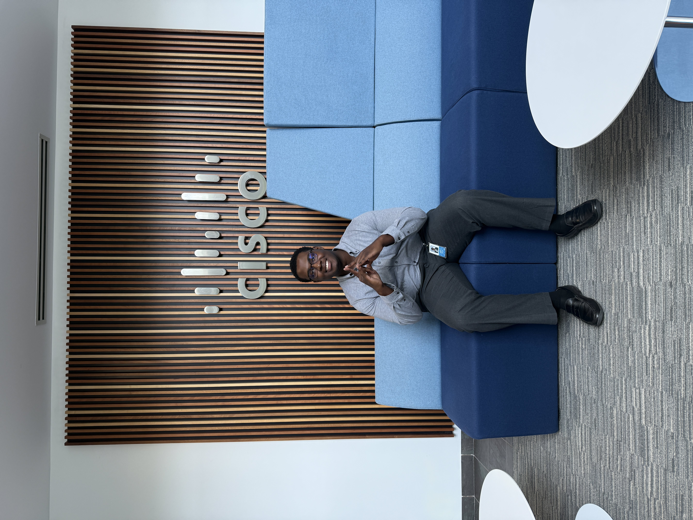
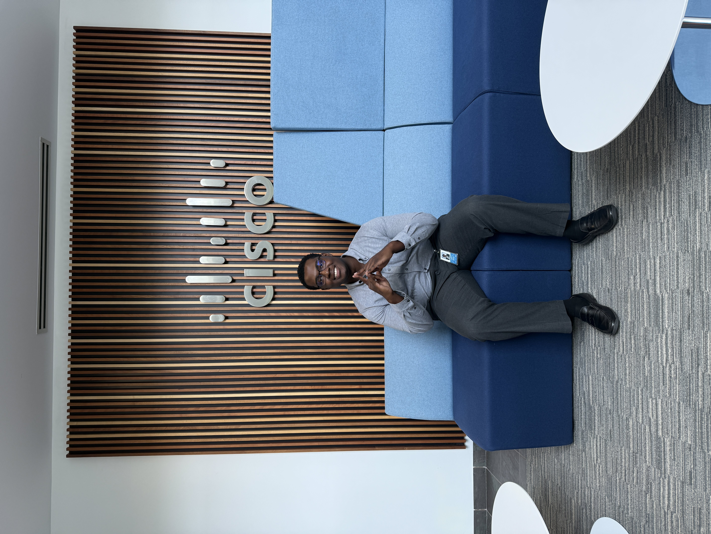

Noah Bunn...
Computer Science Student
Welcome to my personal passion project portfolio! I'm a Computer Science senior at North Carolina A&T State University, passionate about creating innovative software solutions that combine bold functionality with intuitive design.
My experience spans web development, hackathon competitions,a SWE internship at Cisco Security, and music performance - bringing a unique blend of technical expertise and creative problem-solving to every project.


 
